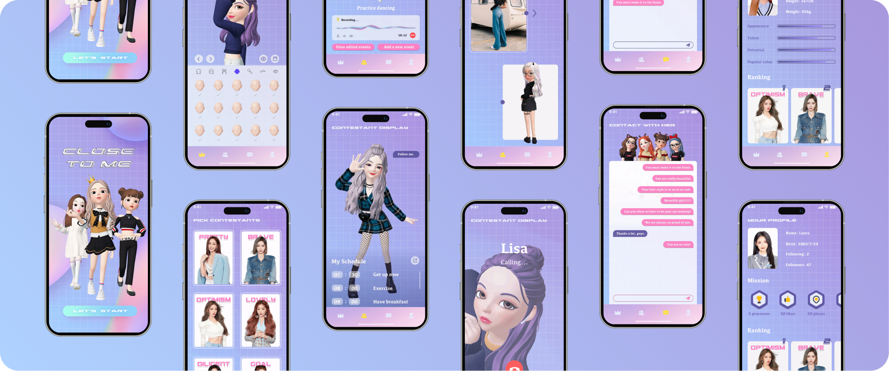

/ 01 OVERVIEW
Originally designed to support the Huyou Beauty Contest, this project evolved into a broader exploration of how digital platforms can enhance talent competitions. While traditional competitions offer structured performances, they often lack real-time interaction, limiting audience engagement beyond passive viewing and simple voting.
 To address this, we propose a metaverse-inspired social media app that transforms talent competitions into an interactive experience. By integrating real-time engagement, exclusive content, and monetization opportunities, the platform aims to strengthen audience-contestant connections and modernize competition formats for the digital era.
To address this, we propose a metaverse-inspired social media app that transforms talent competitions into an interactive experience. By integrating real-time engagement, exclusive content, and monetization opportunities, the platform aims to strengthen audience-contestant connections and modernize competition formats for the digital era.
